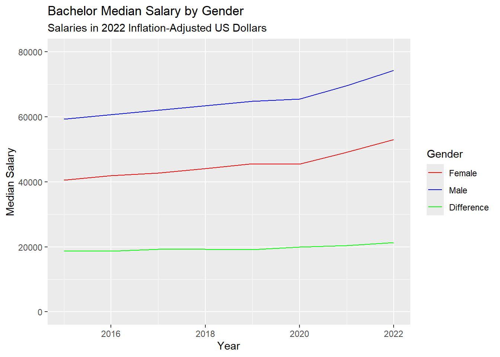
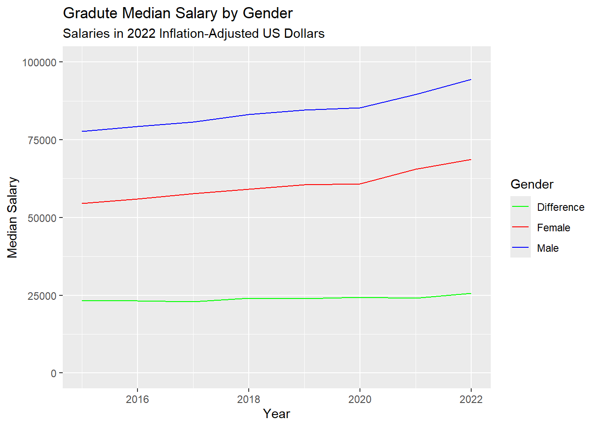
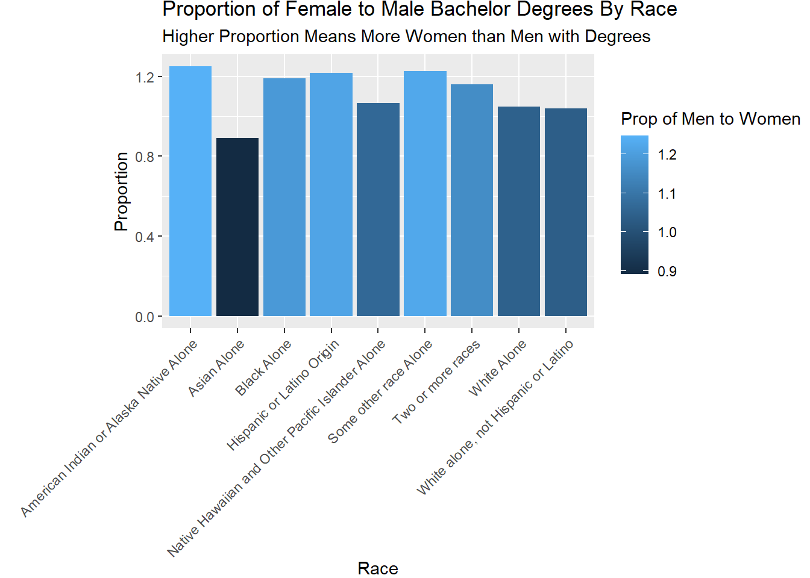
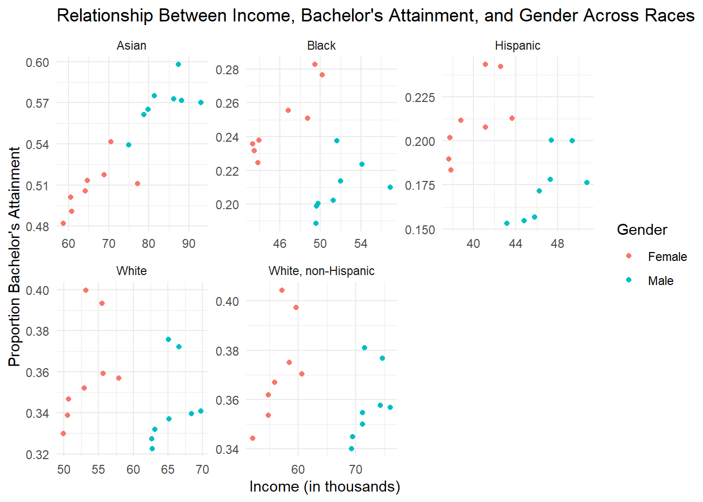

package 'vars' successfully unpacked and MD5 sums checked
The downloaded binary packages are in
C:\Users\dylon\AppData\Local\Temp\Rtmp8C4p0c\downloaded_packagesAnalysis
Here we provide a detailed analysis using more sophisticated statistics techniques.
This comes from the file analysis.qmd.
Exploratory Data Analysis
We hypothesized that a good estimator for average would be the rate at which people achieve bachelor degrees. With this in mind, we wanted to see the rates of bachelor degree attainment for different races.
Graph 1

This graph shows the number of people that have attained bachelor’s degree’s pivoted by race. In general, White people attain bachelor degrees at a much higher quantity. After that, Asian and Hispanic people attain bachelor degrees at a lesser to White people, but similar rates to each other. Black women attain bachelor degrees in similar quantities to Asian and Hispanic women, but there is a distinct drop off with the quantities for Black men.
# A tibble: 9 × 3
Race Male Female
<chr> <dbl> <dbl>
1 American Indian or Alaska Native Alone 0.138 0.172
2 Asian Alone 0.566 0.505
3 Black Alone 0.208 0.248
4 Hispanic or Latino Origin 0.174 0.212
5 Native Hawaiian and Other Pacific Islander Alone 0.112 0.119
6 Some other race Alone 0.138 0.169
7 Two or more races 0.277 0.321
8 White Alone 0.343 0.360
9 White alone, not Hispanic or Latino 0.358 0.372Building off of Graph 1, while White people attain the highest quantities of bachelor degrees, they do not have the highest rates of bachelor degree attainment. Asian people do. Looking at Asian, Black, and Hispanic people who attain bachelor degrees at similar quantities, the rate at which Asian people attain Bachelor’s Degrees is around 2-3 times greater than the rate at which Hispanic or Black people achieve bachelor degrees.
Graphs 2 and 3


Graphs two and three show the median salary for Males and Females of different levels of educational attainment, this example pertaining to Citizens with Bachelors and Masters Degrees. As can be seen above, The disparity between groups is largely consistent.
Graph 4

This graph represents the proportion of Male to Female Bachelor degrees, divided by race. While values are close to average, it is clear to see that on average, more Women achieve Bachelors degrees than Men for every race except for Asian.

Looking at this graph, it is clear to see the data in general follows a linear trend. We have decided to use a VAR model to see if gendering the average median income is statistically significant. We can also see that the changes in each group by year are consistent
Modeling
Model 1: VAR of Average Median Income
| group | term | estimate | std.error | statistic | p.value |
|---|---|---|---|---|---|
| Average.Median.Income.Bachelors | Average.Median.Income.Bachelors..Male..l1 | 2.826356 | 2.312574 | 1.2221692 | 0.3089107 |
| Average.Median.Income.Bachelors | Average.Median.Income.Bachelors..Female..l1 | -4.521218 | 1.912971 | -2.3634530 | 0.0990894 |
| Average.Median.Income.Bachelors | Average.Median.Income.Bachelors.l1 | 2.445225 | 3.106696 | 0.7870822 | 0.4886858 |
| Average.Median.Income.Bachelors | const | -40792.764381 | 13745.460492 | -2.9677263 | 0.0591759 |
When we regress the gendered average median income for people who have achieved bachelors against the Total Average Median Income (TAMI) for the same group, there are no significant p-values. The smallest p-value of the female data is at p = .099 implying that given the TAMI, there is about a 10% chance to get a set of statistics that is as far or further away from the TAMI given that there is no correlation between Average Female Median Income and TAMI.
| term | estimate | std.error | variable |
|---|---|---|---|
| ar1 | 0.8774323 | 0.2161996 | Average Median Income Bachelors |
| ar1 | 0.8432083 | 0.2750058 | Average Median Income Bachelors (Male) |
| ar1 | 0.8997792 | 0.2173128 | Average Median Income Bachelors (Female) |
This is the set of the auto regressive coefficients of each of these variables analysed through a time series model. We can find that their coefficients are extremely similar, implying that our variables all share similar levels of autocorrelation, leading them to all have similar momentum, which implies that the pay gap between men and women is relatively unchanged
With these two models we basically see that the income gap. Although women are getting paid more, so are men, and their pay increases are at similar rates.

As can be seen in the graphs above, it is clear to see the distinction between males and Females in this data for every racial group. Males tend to go to college less and get paid more, but the groups themselves follow a mostly linear trend. This data appears to be suitable for linear regression. Interestingly, a trend can be seen in the Asian group that is unlike the others. Asian men both get paid more, and go to school more. Their model is almost completely linear, including race.
# A tibble: 7 × 5
term estimate std.error statistic p.value
<chr> <dbl> <dbl> <dbl> <dbl>
1 (Intercept) -0.876 0.228 -3.85 2.51e- 4
2 RaceBlack 0.567 0.335 1.69 9.49e- 2
3 RaceHispanic 0.443 0.372 1.19 2.37e- 1
4 RaceWhite 0.356 0.214 1.67 1.00e- 1
5 RaceWhite, non-Hispanic 0.635 0.201 3.16 2.33e- 3
6 GenderMale 0.951 0.0550 17.3 1.63e-27
7 Bachelors_Attainment 1.01 0.131 7.73 4.58e-11# A tibble: 6 × 5
term estimate std.error statistic p.value
<chr> <dbl> <dbl> <dbl> <dbl>
1 (Intercept) 0.806 0.0889 9.07 1.23e-13
2 RaceBlack -1.94 0.115 -16.9 4.55e-27
3 RaceHispanic -2.36 0.115 -20.5 2.78e-32
4 RaceWhite -1.16 0.115 -10.1 1.47e-15
5 RaceWhite, non-Hispanic -0.772 0.115 -6.73 3.17e- 9
6 GenderMale 0.876 0.0726 12.1 3.58e-19Here we made two different linear models. The first shows the affects of Race, Gender, and Bachelors Attainment on Income. From this data we see that not all of the predictor variables are statistically significant. This was attributed to the extremely strong correlation between Bachelors attainment and income, and a second linear model was run to verify this claim. Trends that can be seen in this data that are statistically significant for increases in income are White(non-Hispanic), Male, and the aforementioned Bachelors Attainment.
The second show the affects Race and Gender only (without Bachelors Attainment) on Income. We can now see that all of the predictor variables are statistically significant. The most interesting change is with Asians, who do better than all other racial groups overall. These models are standardized, and estimates represent standard deviations from the national average. The least successful race is Hispanic, and our Male predictor maintains as being an important driver for income.
Next Steps and Further Research
While this project did see some success regarding unearthing underlying trends between gender, race, and education, it left much to be desired. It could have been improved in a variety of ways, some suggestions being:
More Data
With more data points, our regression analysis would have been much more powerful. Due to a lack of relevant data, most high-level analysis was left to Autoregression techniques of linear modeling
More Variables
With other variables, more of the relationship between gender and income, and overall disparity, could have been explored. A particularly interesting datapoint to consider would have been age. As time has went on, our society has changed significantly, and analyzing the disparity in gender when it is separated by age groups could provide interesting results.